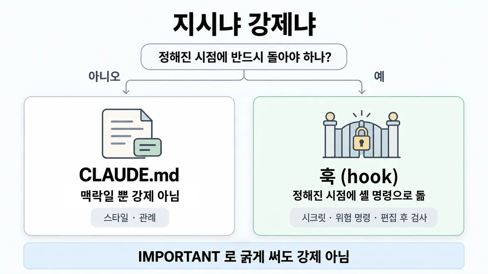
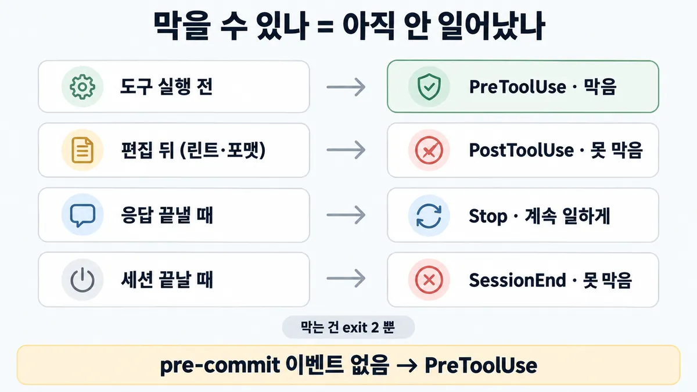

◆ CLAUDE.md(지시) vs 훅(강제)
표시가 없는 문장은 공식 문서에서 확인한 내용이에요. 다른 표시는 읽는 법
왜 배우나 — 시험이 요구하는 것
시험 목표 7.1 팀 도구·환경 설정 · D7 개발팀 7%Configure Claude tools and environments for teams (e.g., Claude Code)
이 개념으로 푸는 판단 (할 수 있어야 하는 것)
- 7.1② '반드시' 돌아야 하는 검사, 어디에 거나? — 지시(CLAUDE.md) vs 훅, 그리고 어느 훅 이벤트
- 7.1③ 에이전트에 줄 권한, 어디까지? — 행동을 allow/ask/deny 로 나눈 공유 설정 + MCP 자격증명 최소 권한
- 7.1① 팀 규칙을 모두의 모든 세션에 똑같이 싣으려면? — 개인 설정 vs 저장소에 커밋한 프로젝트 설정 vs 조직 관리형 설정
한눈에


ELI5
벽에 붙인 "뛰지 마세요" 안내문과, 문 앞 개찰구의 차이예요.
- 안내문은 대부분 지키지만, 급하면 깜빡해요.
- 개찰구는 표가 없으면 문이 안 열려요.
- 개찰구는 들어가기 전에만 막을 수 있어요.
- 이미 들어간 사람은 나올 때 잡아도 늦어요.
개념 설명
원리
CLAUDE.md 는 모델이 읽는 글
- 세션마다 컨텍스트에 실려 모델이 읽고 따름 → 따를 확률은 높지만 0 이 아닌 실패가 남음. 공식 표현 "context, not enforced configuration".
- 길수록 덜 따름(파일당 200줄 목표). 충돌하는 규칙이 있으면 아무거나 고를 수 있음. 강조(IMPORTANT)는 주변보다 우선순위를 올릴 뿐(Skilljar).
- 그래서 맞는 자리 = 스타일·관례·구조 설명처럼 어겨도 되돌릴 수 있는 것.
훅은 Claude Code 가 돌리는 코드
- 정해진 시점(lifecycle event)에 셸 명령으로 돎. 모델이 뭘 정하든 돎 → 결정적.
- 막을 수 있나는 이벤트가 정함 : 아직 안 일어난 일(도구 호출 전·응답 끝내기 전·프롬프트 처리 전)은 막을 수 있고, 이미 일어난 일(도구 실행 뒤·세션 종료)은 못 막음.
- 막는 신호 = exit 2 하나. exit 1 등 다른 0 아닌 코드는 오류로 적히고 진행함.
훅과 권한 규칙의 자리
- 명령 이름만으로 가를 수 있으면 권한 규칙(
permissions.deny)이 더 단순 — 훅 스크립트 없이 한 줄. - 명령 내용·인자를 내 로직으로 봐야 하면(시크릿 패턴, 우회 표기) PreToolUse 훅.
- 둘은 겹쳐 돎 : PreToolUse 훅이 권한 확인창보다 먼저. exit 2 는 allow 규칙이 있어도 막고, 훅의 "allow" 는 deny·ask 규칙을 못 넘음.
핵심 질문 두 개
- 어기면 되돌리기 어려운가(매번·반드시)?
- 막아야 할 순간이 일이 벌어지기 전인가 후인가?
규칙과 판단


갈림길
지시냐 강제냐 [7.1②]
훅
정해진 시점에 셸 명령으로 돎. Claude 가 뭘 정하든
CLAUDE.md
맥락일 뿐 강제 아님. 구체적·확인 가능하게, 파일당 200줄 미만
어느 이벤트 [7.1②]
PreToolUse
exit 2 = 도구 호출 막음
PostToolUse
못 막음 — 도구는 이미 실행, stderr 만 Claude 에게
Stop
exit 2 = 멈춤을 막고 계속 일하게 함
SessionEnd
못 막음 — 정리만
PreToolUse + if 로 git 명령만
'pre-commit' 이벤트는 없음
권한 규칙과 겹칠 때 [7.1②] [7.1③]
permissions.deny
규칙 한 줄 → ■ 에이전트 권한
PreToolUse 훅
명령 내용을 내 코드로. updatedInput 으로 고쳐서 실행도 됨 (Skilljar)
흐름
그림 속 이름·금액·시간·토큰 수는 예시예요. 공식 한도·동작은 카드 본문 값이 기준.
장면 글로 보기
칸 : Claude → 훅 → 도구
규칙 (훅) : 막을 수 있는지는 그 일이 아직 안 일어났느냐로 정해짐
질문 : 커밋을 실제로 막는 건 어느 칸일까?
① PreToolUse 에서 막기 ✓
- 시작 : Claude — 쪽지 : Bash:
git commit -a/ 스테이징:.env - 호출 : Claude → 훅 : 도구 실행 전 — 쪽지 : PreToolUse / if:
"Bash(git *)"→ 일치 - 차단 : 훅 : exit 2 = 도구 호출 막음 — 쪽지 : stderr: .env 커밋 차단 / exit 2
- 끝 : Claude 가 뭘 정하든 도구 호출 막음 —
git commit은 안 돎
② CLAUDE.md 에만 적음 ≠
- 시작 : Claude — 쪽지 : CLAUDE.md: / IMPORTANT:
.env커밋 금지 - 결정 : Claude : 맥락일 뿐 강제 아님 — 쪽지 : Bash:
git commit -a/ 스테이징:.env - 건너뜀 : 훅
- 호출 : Claude → 도구 : 대부분 지켜지지만 — 쪽지 :
git commit실행됨 / +.env - 끝 : 보장 아님 — CLAUDE.md 는 맥락일 뿐 강제 아님
③ PostToolUse 로 막으려 함 ≠
- 시작 : Claude — 쪽지 : Bash:
git commit -a/ 스테이징:.env - 호출 : Claude → 도구 : 실행이 먼저 — 쪽지 :
git commit실행됨 / +.env - 검사 : 훅 : 못 막음 — stderr 만 Claude 에게 — 쪽지 : PostToolUse / stderr: .env 발견 / (이미 커밋됨)
- 끝 : 도구는 이미 실행 — 막으려면 PreToolUse
규칙 원문 갈림 기준 어느 이벤트 (갈림길로 그린 규칙)
갈림 기준
어기면 큰일인가가 먼저
- CLAUDE.md = 맥락일 뿐 강제 아님(context, not enforced configuration). 대부분 지켜지지만 보장 아님. 길수록 덜 따름 → 파일당 200줄 미만 · 구체적·확인 가능하게
- "매 커밋 전 · 매 편집 후"처럼 정해진 시점에 꼭 돌아야 하면 훅. 정해진 시점에 셸 명령으로 돎. Claude 가 뭘 정하든
공식 표 : 도구·명령·경로 막기 = settings permissions.deny · 코드 스타일·품질 지침 = CLAUDE.md
- 명령 이름만으로 막을 수 있으면
permissions.deny한 줄(예Bash(git push *)). 명령 내용을 내 코드로 봐야 하면 PreToolUse 훅 — 막거나,updatedInput으로 고쳐서 실행도 됨(시크릿 가리기) (Skilljar) → ■ 에이전트 권한 - 훅은 권한 규칙보다 먼저 돎 : exit 2 훅은 allow 규칙이 있어도 막음. 반대로 훅이 "allow" 를 내도 deny·ask 규칙은 그대로
- 팀에 거는 훅 = 커밋한
.claude/settings.json에(■ 팀 설정 위치). 조직이 못 끄게 = 관리형 훅 — 사용자·프로젝트의disableAllHooks로 못 끔 ·allowManagedHooksOnly면 사용자·프로젝트·로컬 훅은 안 돎
어느 이벤트
막을 수 있는지는 그 일이 아직 안 일어났느냐로 정해짐
| 하고 싶은 것 | 이벤트 | exit 2 |
|---|---|---|
| 실행 전 차단 (위험 명령·시크릿·보호 파일) | PreToolUse | 도구 호출 막음 |
| 편집 뒤 린트·포맷·경고 | PostToolUse | 못 막음 — stderr 만 Claude 에게, 도구는 이미 실행 |
| 응답 끝낼 때 "아직 안 끝남"(테스트 통과 확인) | Stop | 멈춤을 막고 계속 일하게 함 |
| 프롬프트 검사 | UserPromptSubmit | 프롬프트 처리 막고 지움 |
| 세션 끝 정리 | SessionEnd | 못 막음 — 사용자에게 stderr 만 |
막는 건 exit 2 뿐. 다른 0 아닌 코드(예 1)는 막지 않고 계속 진행
SessionStart 훅 = 맥락만 넣음(additionalContext). 막는 힘 없음 → 규칙을 SessionStart 로 싣는 건 여전히 지시지 강제 아님
matcher 는 도구 이름 정확히 : Bash 는 Bash 도구만. 편집까지 잡으려면 Edit|Write 를 따로 적어야 함 → "셸엔 돌고 편집엔 안 돎" = matcher 범위부터 봄
Stop 은 "세션 끝"이 아니라 Claude 가 응답을 끝낼 때마다(턴마다). 끝없는 반복 방지 : stop_hook_active 확인 · 연속 8번 계속시키면 Claude Code 가 턴을 끝냄
Claude Code 이벤트 목록에 'pre-commit' 은 없음 → PreToolUse 에 if 필드(권한 규칙 문법, 예 "Bash(git *)")로 git 명령만 거름. git 자체 pre-commit 훅도 방법 업계 일반
더 깊이 : 판단 규칙 · 상황 변수 (설명)
판단 규칙
| 조건 | 답 | 근거 |
|---|---|---|
| 어떤 행동을 Claude 판단과 무관하게 막아야 함 | PreToolUse 훅 | memory "To block an action regardless of what Claude decides, use a PreToolUse hook instead." |
| 매 커밋 전·매 편집 후처럼 정해진 시점에 꼭 | 훅 | memory "such as before every commit or after each file edit, write it as a hook instead." |
| 코드 스타일·품질 지침·데이터 취급 알림 | CLAUDE.md | memory |
| 도구·명령·경로 막기 | settings permissions.deny | memory |
| 편집 뒤 자동 포맷·린트 | PostToolUse (막지는 못함) | hooks · Skilljar 486933 |
| 테스트 통과 전엔 응답을 못 끝내게 | Stop (exit 2 = 계속 일함) | hooks |
| 세션 끝 정리·기록 | SessionEnd (막는 힘 없음) | hooks |
| 커밋 전 검사 | PreToolUse + if 로 git 명령만 거름 | hooks(이벤트 목록에 pre-commit 없음) ·(if) |
상황 변수
| 변수 | 값 | 답 쪽 | 근거 |
|---|---|---|---|
| 요구 강도 | "반드시"·되돌리기 어려움 | 훅·권한 규칙 | 판단 규칙 1·2 |
| 요구 강도 | "되도록"·스타일 | CLAUDE.md | 판단 규칙 3 |
| 시점 | 도구 실행 전 | PreToolUse | hooks |
| 시점 | 도구 실행 뒤 | PostToolUse — 경고·정리만 | hooks |
| 시점 | 응답 끝낼 때 | Stop | hooks |
| 시점 | 세션 끝 | SessionEnd — 못 막음 | hooks |
| 판단 재료 | 명령 이름뿐 | permissions.deny | permissions |
| 판단 재료 | 명령 내용·다른 표기 | PreToolUse 훅 · 샌드박스 | permissions |
| 누가 끌 수 있나 | 팀원이 꺼도 됨 | .claude/settings.json 훅 커밋 | hooks |
| 누가 끌 수 있나 | 아무도 못 끄게 | 관리형 훅 | hooks |
| 실행 방식 | async: true 훅 | 못 막음 | hooks |
연습 문제
팀 CLAUDE.md 에 "IMPORTANT: .env 는 절대 커밋하지 마" 가 굵게 적혀 있는데도 가끔 커밋된다. 팀은 git commit 이 실행되기 전에커밋 전 반드시 막는반드시 장치를 원한다. 한 팀원은 Claude Code 의 pre-commit 훅 이벤트에 걸자고 한다. 어디에 무엇을 걸까?
시험 대비
함정
- "CLAUDE.md 에 '반드시 검사'를 굵게·IMPORTANT 로" → 맥락일 뿐 강제 아님. 강조는 주변보다 우선순위만 올림 (Skilljar)
- "Stop 훅에 걸어 세션이 끝날 때 최종 검증" → Stop 은 응답 끝날 때마다. 세션 끝은 SessionEnd 이고 막는 힘 없음
- "PostToolUse 로 시크릿 커밋을 막는다" → 도구는 이미 실행됨. 막으려면 PreToolUse
- "exit 1 로 막는다" → exit 2 만 막음
- "규칙을 SessionStart 훅으로 매 세션 주입하면 강제" → 맥락만 넣음, 막는 힘 없음
- "Claude Code 의 pre-commit 훅 이벤트에 건다" → 그런 이벤트 없음
- "더 큰 컨텍스트 창·더 큰 모델로 규칙을 더 잘 지키게" → 강제와 무관 업계 일반
- 반대 함정 : "모든 규칙을 훅으로" → 코드 스타일·관례는 CLAUDE.md 가 공식 자리
신호
"Claude treats them as context, not enforced configuration. To block an action regardless of what Claude decides, use a PreToolUse hook instead."
"If the instruction is something that must run at a specific point, such as before every commit or after each file edit, write it as a hook instead."
"Hooks execute as shell commands at fixed lifecycle events and apply regardless of what Claude decides to do."
"Settings rules are enforced by the client regardless of what Claude decides to do. CLAUDE.md instructions shape Claude’s behavior but are not a hard enforcement layer."
"Shows stderr to Claude; the tool already ran" (PostToolUse)
"SessionEnd hooks have no decision control. They can’t block session termination but can perform cleanup tasks."
"A hard rule like that belongs in a pre-tool-use hook instead." (Skilljar)
더 깊이 : 뒤집히는 때 · 오답 재료 (설명)
뒤집히는 때
1. PostToolUse 가 정답인 때
- 조건 : "Claude 가 파일을 고칠 때마다 포맷터를 돌려라". 막을 필요는 없고 매번 돌기만 하면 됨.
- 판단 : PostToolUse 가 맞는 자리. "PostToolUse = 늘 오답"이 아님 — 막으려 할 때만 오답. 결과를 보고 Claude 에게 알릴 것이 있으면 exit 2 로 stderr 를 Claude 에게 보냄.
- 근거 : hooks · Skilljar 486933 "This is usually where auto-formatting or an auto-lint goes."
2. 팀 훅을 커밋했는데 안 도는 때
- 조건 : 개발자 45명 저장소에 PreToolUse 시크릿 검사 훅을 커밋. 한 팀원 설정에
disableAllHooks: true, 또는 조직이allowManagedHooksOnly를 켬. - 판단 : 프로젝트 훅은 팀원이 끌 수 있고,
allowManagedHooksOnly면 사용자·프로젝트·로컬 훅이 아예 안 돎. 조직 차원의 "반드시"면 훅을 관리형으로 올림 — 관리형 훅은 관리형 밖의disableAllHooks로 못 끔. - 근거 : hooks
3. Stop 훅이 "항상" 붙잡지는 못하는 때
- 조건 : Stop 훅이 "테스트가 초록이 될 때까지 계속" 을 exit 2 로 강제. 테스트가 환경 문제로 영영 안 풀림.
- 판단 : 연속 8번 계속시키면 Claude Code 가 다음 막기를 무시하고 턴을 끝냄. 훅은
stop_hook_active를 보고 스스로 풀어 줘야 함. Stop 은 "끝내기 전 검사" 지 무한 강제가 아님. - 등급 : (상한값은
CLAUDE_CODE_STOP_HOOK_BLOCK_CAP로 바뀜) - 근거 : hooks
4. 권한 규칙이 훅을 이기는 때
- 조건 : PreToolUse 훅이
git push에"allow"를 돌려주는데, 관리형 settings 에Bash(git push *)ask 가 있음. - 판단 : 훅의 allow 는 deny·ask 규칙을 못 넘음 → 여전히 확인창. 반대로 훅의 exit 2 는 allow 규칙보다 먼저 막음. "훅이 최종 결정권자"가 아님 — 훅의 판정은 막는 쪽으로만 효력이 있음.
- 근거 : permissions
5. 이름 규칙만으론 못 막는 때
- 조건 :
permissions.deny에Bash(git push *). Claude 가git -C . push로 실행. - 판단 : Bash 규칙은 글자 매칭이라 안 걸림. 내용을 보는 PreToolUse 훅이나 샌드박스가 필요. "deny 한 줄이면 끝"이 뒤집힘.
- 근거 : permissions
오답 재료
| 오답 | 왜 끌리나 | 왜 틀리나 | 등급 | 근거 |
|---|---|---|---|---|
| "CLAUDE.md 에 '커밋 전 반드시 시크릿 검사'를 굵게" | 가장 쉬운 수정 | 맥락일 뿐 강제 아님. 매 커밋 전이면 훅 | memory | |
| "Stop 훅에 걸어 세션이 끝날 때 최종 검증" | 이름이 '멈춤' | Stop 은 응답 끝날 때마다. 세션 끝은 SessionEnd, 막는 힘 없음 | hooks | |
| "PostToolUse 로 위험 명령 차단" | 결과를 보고 판단할 수 있어 보임 | 도구는 이미 실행 | hooks | |
| "exit 1 로 막는다" | 1 이 '오류' 같음 | 막는 건 exit 2 뿐 | hooks · Skilljar 486933 | |
| "Claude Code 의 pre-commit 훅 이벤트에 건다" | git 훅과 이름이 겹침 | 이벤트 목록에 없음. PreToolUse + if | hooks | |
| "더 큰 모델·더 큰 창이면 규칙을 더 잘 지킨다" | 성능이 오르면 다 나아질 것 같음 | 확률을 올릴 뿐 강제가 아님 | 업계 일반 | — |
| "모든 팀 규칙을 훅으로" | 강제가 늘 더 안전해 보임 | 스타일·관례는 공식이 CLAUDE.md 에 둠. 훅은 유지비가 듦 | memory | |
| "훅이 allow 를 주면 확인창이 사라진다" | 훅이 권한을 정하는 것 같음 | deny·ask 규칙은 그대로 먹음 | permissions |
참고
CCA-F
봄 (1.4 "반드시 지킬 순서는 프롬프트가 아니라 hook·게이트" · 1.5 PreToolUse = 막기·입력 바꾸기, PostToolUse = 이미 실행 뒤 결과 다루기) — 여기선 같은 원리를 팀 개발 환경에 옮겨, 시크릿·린트·테스트 검사를 어느 이벤트에 걸고 팀·조직 중 어디에 싣나로 묻는다. 에이전트 앱 설계는 D5 ◆ 안내(프롬프트) vs 강제(구성·코드)
개념
출처
- 가이드 목표 7.1 공식 시험 가이드 v1.0
- code.claude.com memory
- hooks
- permissions (2026-09-28 조회)
- Skilljar Claude Code in Action 486929·486933
- CCA-F 노트 1.4·1.5 (개인 학습 노트)
상태
- 업계 일반 2줄
미해결
- 목록 7.1② 의 "Part 24 [08:15] 'pre-commit 또는 pre-tool use'" — Claude Code 이벤트엔 pre-commit 이 없음(확인). git 자체 pre-commit 훅은 Claude Code 문서 밖이라 카드엔 업계 일반으로만 둠.
- D5 ◆ 안내(프롬프트) vs 강제(구성·코드) 와의 경계 : 이 카드는 Claude Code 팀 설정(CLAUDE.md·settings·훅)만. 에이전트 앱의 system prompt vs 코드 게이트는 D5 쪽 — 그 카드가 나오면 겹침 문장 확인 필요.
- hooks-guide(code.claude.com/docs/en/hooks-guide) 는 받지 않음 — 이벤트·exit 코드는 hooks 레퍼런스(en-claude-code-hooks.md)로 대조함.